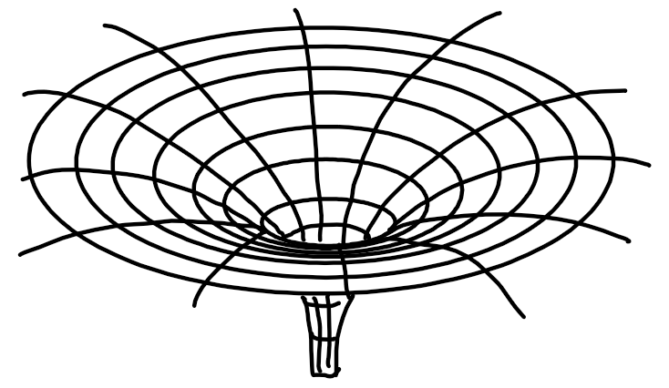
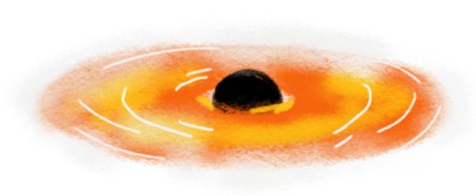

to get to the english language page, click here
trou noir késako?
bon, on se tutoie si ça te dérange pas trop.
vu que maintenant c'est que toi et moi, je te donne
mon spiel de manière un peu plus directe.
un trou noir, en soi, c'est tout simple. c'est un objet d'une masse telle
qu'aucune force ou particule dans l'univers ne peut rivaliser avec sa gravité.
pas même la lumière! d'où le nom de trou noir.

de base, les trous noirs, c'était juste une conjecture, une curiosité prédite par
la solution la plus simple aux équations de champ d'einstein, celle de schwarzschild.
schwarzschild a réussi à formuler une solution, qui, bien qu'elle fusse très simple en
soi (le champ gravitationnel autour d'une masse à symmétrie sphérique — c'est à dire toute ronde),
suggérerait l'existence d'un objet si dense qu'il ne laisserait pas la lumière s'en échapper.
vu qu'on y est, c'est quoi la gravité?
la gravité selon einstein, c'est tout d'abord une histoire de géométrie. il s'agit de 2 postulats:
- la présence de matière va déformer l'espace temps de façon plus ou moins proportionelle à sa masse
- la matière se déplace le long de trajectoires définies par l'espace temps
le physicien john wheeler utilise une jolie tournure de phrase:
«l'espace-temps indique à la matière comment bouger — la matière indique à l'espace-temps comment se courber»
en gros, un objet que je lance tombe par terre, non pas parce que le sol l'attire comme un aimant...
mais parce que toute la matière qui constitue l'ensemble de la planète a déformé
l'espace temps et la balle ne fait que suivre la trajectoire définie par la présence de la terre.
cette trajectoire correspond à une ligne droite dans la géométrie de l'espace temps terrestre
la gravité, c'est juste une propriété de la courbure de l'espace-temps —
et un trou noir, c'est tout simplement ce qui arrive quand la courbure
est trop intense
espace, temps, et puis quoi encore?
en gros, l'espace-temps, c'est la surface de l'univers. tout ce qui existe,
a existé ou existera, a sa place définie sur l'espace temps.
prenons, par example, l'example d'une petite voiture hot wheels sur une table.
la surface de la table représente l'ensemble des endroits où la petite voiture peut aller.
on peut rajouter une dimension supplémentaire pour représenter le temps qui passe,
un peu comme ça à droite.
ainsi, la trajectoire de la voiture sur le diagramme espace-temps que l'on vient de définir
est une ligne droite, qui vient de l'origine (déplacement 0 centimètres, temps écoulé 0 secondes)
et trace une diagonale vers le haut et la droite (passant par le point à 10 centimètres et 2 secondes, disont)
ainsi, toute combinaison de 3 nombres $(t,x,y)$ correspond à un endroit précis et unique
parmi tous les points où la voiture peut aller.
notre espace-temps à nous, est en 4 dimensions:
- temps $(t)$
- endroit $(x,y,z)$, ou droite-gauche, devant-derrière, dessous-dessus
les trous noirs, on les trouve principalement sous deux formes différentes: trous noir stellaires,
ce qu'il reste après qu'une étoile massive ait usé tout son carburant, et
trous noirs massifs (ou supermassifs), qu'on trouve au centre de la plupart des (grosses) galaxies.
moi, c'est ces derniers qui m'intéressent.
recette pour un trou noir
pour t'en cuire un fait maison, tout ce qu'il te faut, c'est d'assembler
assez de matière en un seul endroit et laisser la gravité faire son
travail.
Je te rassure: par ''assez'' de matière, je veux dire vraiment beaucoup
de matière. genre, la masse de plusieurs soleils au moins.
et puis le soleil, c'est déjà un sacré gaillard. une unité de masse solaire,
$1M_\odot$, c'est égal à $10^{30}$ kilogrammes, plus ou moins. le symbole $\odot$
signifie ''solaire.''
donc, on reprend:
ta recette à trou noir infaillible consiste à rassembler au moins $\sim 3M_{\odot}$ dans
un coin tranquille. toute cette masse va commencer à s'effondrer sous son poids, et si
à la base t'avais une sorte de nuage de particules de gaz, tu vas les voir se contracter
en une sphère de plus en plus compacte, au centre de laquelle la pression et la température
grimpent ... et grimpent...
... jusqu'au moment fatidique...
... où la sphère s'embrase!
félicitations! tu es désormais le fier parent d'une belle étoile toute neuve!
mais que c'est il donc passé?
le gaz qui forme ta sphère devrait consister
vraisemblablement plutôt d'hydrogène, l'élément le plus léger et le plus abondant
dans tout l'univers. c'est un atome fait d'un seul proton en tant que noyau, autour
duquel orbite un seul électron.
au centre de ta sphère, tu as atteint des conditions telles
que spontanément, tu as réussi à enclencher la fusion d'hydrogène en hélium, ce qui
est une source prodigieuse d'énergie.
cette énergie est libérée majoritairement sous la forme de lumière, qui produit une pression radiative
vers l'extérieur, qui arrive à contrebalancer la force de gravité et ta sphère de gas cesse
de s'effondrer (pour un certain temps).
tu peux maintenant attendre quelques milliards d'années pour que ta belle étoile épuise tout
son carburant. à ce moment là, la pression radiative qui équilibrait l'équation n'est plus
là pour combattre la force de la gravité.
et là, c'est le drame. l'effondrement.
on est pas totalement sûrs comment les trous noirs supermassifs se sont formés.
on a pas mal de théories, mais c'est difficile de prouver laquelle est correcte
sans preuve irréfutable.
comment ça, ça brille?
les trous noirs, eux-mêmes, ils brillent pas vraiment. mais si tu leur fournis un nuage
de gas et poussière, un
disque d'accrétion va se former autour. cette matière va
chauffer pas mal, et se mettre à scintiller, comme une étoile ou comme une flamme sur ta
gazinière, mais dans des longeurs d'ondes plus courtes (c'est à dire plus énergétique).

ces photons vont interagir avec des champs magnétique, des électrons libres à énergies
très élevées et l'espace-temps même autour du trou noir. ainsi, compter le nombre de
photons pour chaque intervalle d'énergie te permet de déduire plein d'information
sur ce qu'il se trouve à leur source! et ça, c'est vachement pratique.
retour